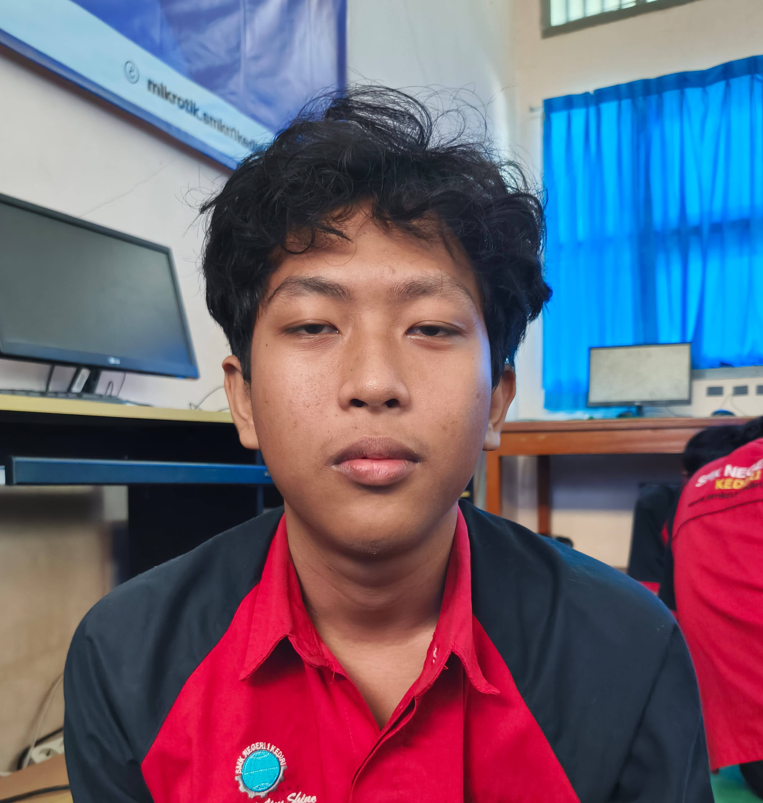

About Me
Perkenalkan nama saya Muhammad Fadyel Daroini, lahir di Kota Kediri, Jawa Timur pada tahun 2007. Saya saat ini berumur 18 tahun dan bersekolah di SMKN 1 Kota Kediri.

My Skills
AI
HTML/CSS
Study
Sleep
My Hobbies
Basketball
lebih menyukai menonton basket seaslinya namun sering juga bermain basket (kalo temen libur kuliah)

Reading Books
akhir-akhir ini suka membaca buat ngurangin doomscrolling (dompet taruhannya)
Cycling
cardio saat ini (malas lari jir)